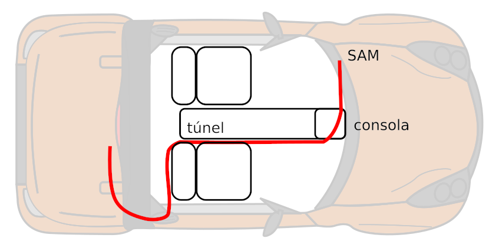
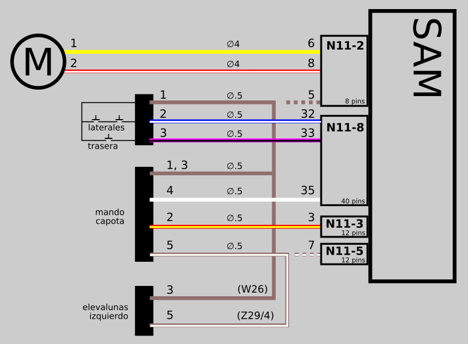

Instalación de la capota
Contents
Instalación de la capota#
Esta receta explica la instalación de la capota (soft top) en un Smart Roadster hard-top. Como siempre, con la inestimable ayuda de Josep, Maxito, Davichini y demás gentes de bien de Forosmart.
Iré escribiendo conforme vaya avanzando, así que esto es “work in progress”…
Inventario de piezas
Carrier
Motor
Largueros
Patines (2 parejas) y pestañas
Cables (2 cortos y 2 largos)
Martillos y aletas
Ganchos frontales (y sus muelles)
Ganchos traseros (y sus muelles)
Soportes para guardar los largueros en el maletero delantero
Embellecedores del carrier
Mando de accionamiento en la consola
Lona con sus travesaños y cintas
Carrier
Ref: Q0009862V011000000 (no verificado) Nombre oficial: ? Es la pieza principal que incluye el motor y los raíles por los que se desplazan las piezas móviles.
Motor
Ref: Q0009879V002000000 (no verificado)
Largueros (roof bar)
Ref: Q0009336V011C46L00 (no verificado)
Patines (slider)
Ref: Q0014822V001000000 (verificado) Nombre oficial: “Slide hoop” / “Patín cercha”
Pestaña para patines
Ref: Q0022489V001000000 (verificado) Nombre oficial: “Funda de la capota”
Pestaña montada en el patín:
Cables (Sirgas)
Ref: Q0014817V003000000 (no verificado) Nombre oficial: ? Cable distanciador («distance»): Conecta dos piezas móviles dentro del raíl.
Cable tractor («driver»): Son mucho más largos y los movidos directamente por el motor. El del lado del acompañante es un poco más largo porque el motor está ligeramente situado a la izquierda del coche.
Martillos y aletas
Se venden junto con los cables. Martillos:

Aletas:
Martillo y aleta unidos:
Ganchos frontales
Ref: MQ0014825V002000000 (verificado) Nombre oficial: “Catch front” / “Cierre del”
Muelles para ganchos frontales
Ref: 0010741 V001 0000 00 Nombre oficial: “Spring y-compensator” / “resorte a compresion comp”
Ganchos traseros
Ref: MQ0014826V002000000 (no verificado) Nombre oficial: “roof cap holder”
Soportes para los largueros
Son dos piezas extraíbles que permiten sujetar los largueros en el maletero delantero. Ref: 0011964V004C22A00 (verificado) Nombre: Member mount RH / Alojamiento de larguero
Ref: Q0011917V004C22A00 (verificado) Nombre: Member mount LH / Alojamiento de larguero
Embellecedores para el carrier
Ref: Q00014829V001000000 (verificado) Nombre oficial: Cover B-PILLAR / Cubierta montante B
Carrier
Es la pieza metálica por la que corre la capota.
Capota
La capota de tela propiamente dicha.
Sacando la moqueta#
La moqueta del roadster soft-top es diferente a la del hard-top, en concreto la pieza tras los asientos hasta la tapa del motor. La versión soft-top tiene unos cortes que dejan hueco al soporte del carrier. A continuación aparecen las medidas y patrones para cortar la moqueta hard-top si no puedes conseguir una moqueta soft-top.
[PENDIENTE]
En todo caso, es necesario quitarla para montar el cableado. Procedimiento
Quita los asientos. Coloca los tornillos en su tuerca o de lo contrario las tuercas pueden perderse bajo el suelo.
Quita pomo de la palanca de cambio. Sale a presión. Cuidado de no pulsar el botón o se romperá al tirar.
Quita la cubierta de la palanca de cambio.
Retira tornillos de las guías de los cinturones.
Retira los paneles que cubren los mecanismos de los cinturones.
Retira los embellecedores de los puntos de anclaje del techo rígido.
Retira las piezas de moqueta tras los asientos. La pieza del suelo no es necesario quitarla, se puede trabajar razonablemente levantando de un lado.
Una vez retirada la moqueta:
Moqueta «hard-top» cortada:
Instalación del carrier#
El carrier está sujeto por 5 tornillos en la base y 3 más a cada lado. Estos tornillos están ya en el coche, puesto que se trata de sustituir las piezas actuales por el carrier.
La pieza a substituir tiene una forma muy similar a la base del carrier, dado que está ahí para tapar el hueco correspondiente:
La pieza una vez fuera:
Se deben retirar los soportes laterales del hard-top. En la siguiente foto aparece el derecho antes y después de retirarlo:
Soporte izquierdo del carrier:
Instalación del cableado del motor#
El mecanismo de accionamiento de la capota necesita dos conjuntos de cables, que van desde la SAM hasta el soporte del mecanismo de la capota. Estos cables van bajo la moqueta pasando a un lado de la base de la palanca de marchas.
Este cable se puede comprar en repuestos, pero solo mide un metro. Tendremos que añadir cable para llegar a la SAM.

Ref: Q0015397V001000000 (verificado) Nombre: “Repair set soft top” / “Conjunto de reparación ca”
Conectores hembra en la base:
Interruptor de seguridad lateral, ubicado tras el alojamiento trasero del larguero (roof bar):
La siguiente imagen de la parte interior de la moqueta da una idea de por donde debe pasar el cable:
Y el recorrido aproximado del cable desde los conectores del motor hasta la SAM:
El soporte del asiento tiene unos pequeños huecos en el borde inferior que resultan ideales para pasar los cables pegados tras el asiento y en el borde del túnel:
Además es necesario instalar el mando de la consola que acciona la apertura y cierre. El conector se vende en repuestos de VW y Audi y es fácil de conseguir en desguace (por ejemplo, en los mandos del elevalunas del fortwo). El conector tiene indicados por detrás la numeración de los terminales.

{kind=link}
{kind=link}
{kind=link}
{kind=link}
{kind=link}
{kind=link}
{kind=link}
{kind=link}
{kind=link}
{kind=link}
{kind=link}
{kind=link}
{kind=link}
{kind=link}
{kind=link}
{kind=link}
{kind=link}
{kind=link}
{kind=link}
{kind=link}
{kind=link}
{kind=link}
{kind=link}
{kind=link}
{kind=link}
{kind=link}
{kind=link}
{kind=link}
{kind=link}
Alimentación del motor#
Está formado por 2 hilos de 4.0 mm de sección con la siguiente disposición:
conector |
hilo |
hacia |
|---|---|---|
Pin 1 |
amarillo |
Pin N11-2/6 |
Pin 2 |
rojo-blanco |
Pin N11-2/8 |
Interruptores de seguridad#
Está formado por 3 hilos de 0.5 mm de sección. Los cables tienen colores diferentes antes y después del conector S2, como se muestra aquí:
antes |
conector S2 |
hilo |
hacia |
|---|---|---|---|
marrón |
Pin 1 |
marrón |
Masa W26 |
amarillo-marrón |
Pin 2 |
azul-blanco |
Pin N11-8/32 |
negro-verde |
Pin 3 |
rosa-negro |
Pin N11-8/33 |
El Pin 2 del conector viene de los sensores (interruptores) que detectan los travesaños. La capota solo se puede cerrar si ambos conectores están cerrados (los travesaños están colocados en su posición).
El Pin 3 del conector viene del sensor (interruptor) de la solapa de la capota. La capota solo se puede abrir si la solapa está levantada, es decir, supuestamente no hay carga en el maletero que obstruya la apertura.
Interruptor del mando en la consola. Todos los hilos son de 0.5 mm de sección.
conector |
hilo |
hacia |
|---|---|---|
Pines 1 y 3 |
marrón |
masa W26 |
Pin 2 |
rojo-amarillo |
N11-3/3 |
Pin 4 |
blanco |
N11-8/35 |
Pin 5 |
marrón-blanco |
Z29/4 |
Los puntos de conexión W26 y Z29/4 son comunes a muchos componentes del coche.
W26 está en el lado inferior derecho de la consola.
Z29/4 está bajo la cubierta superior del volante.
Pero estas conexiones se pueden hacer de un modo mucho más sencillo utilizando el conector del mando del elevalunas, que tiene conexiones a dichos lugares. Es sencillo siguiendo este esquema (las líneas discontinuas indican la conexión oficial equivalente.
{kind=link}
Los cables marrón van todos a masa. Según el fabricante deben conectarse al pin C2/5 (esto se refleja en el esquema anterior con la linea marrón discontinua), pero el pin 3 de los elevalunas también va a masa y queda mucho más a mano.
Comprobación del motor#
Una vez conectado todo según el esquema anterior es hora de probar el motor:
Comprueba que el fusible 29 (25A) está en su lugar. Muchos coches hard-top lo incluyen de serie.
Desconecta el cable del motor de la capota, en caso de malfuncionamiento el motor podría no parar y causar daños antes de que pudieras quitar el contacto.
Comprueba que el sensor de carga del maletero (la pieza de plástico grande, larga y abatible del carrier) está en posición vertical.
Quita el hard-top y los largueros.
Coloca unas dardos Nerf para presionar los microinterruptores de seguridad a ambos lados.
Pulsa el mando en la consola arriba y abajo. Deberías oír los relés de la SAM que comandan el motor.
Si el paso anterior ha ido bien, conecta el cable de alimentación al motor de la capota.
Acciona brevemente el mando y el cable tractor debería moverse. Muévelo solo unos centímetros teniendo cuidado de que las piezas del extremo del cable no quedan trabadas con el borde del rail.
Ver vídeo: https://goo.gl/PnjP82
{kind=link}
{kind=link}
Mantenimiento#
Lona#
La lona se debe limpiar con agua y jabón neutro. Para una limpieza más profunda puedes utilizar Renovo Softtop cleaner.
Si la lona está descolorida puedes usar Renovo Reviver black.
Finalmente puedes impermeabilizar con Renovo Ultra Proofer
Es muy importante que respetes los tiempos de secado para el tinte y el impermeabilizador.
Mantenimiento y lubricación de los raíles#
La limpieza deficiente es probablemente la causa principal de roturas y desgaste de las piezas. Es muy importante el mantenimiento de los raíles si no quieres que te salga muy muy caro. Hay dos tipos de raíles tanto en los largueros como en el carrier:
Los de perfil cuadrado, por los cuales pasan los patines y los catch. Estos se deben limpiar con vaselina neutra y un cepillo de dientes. Se pueden lubricar también con vaselina.
[foto]
Los de perfil cilíndrico es por donde pasan las sirgas. Estos se pueden limpiar con una guía de electricista (usando solo la parte plástica) o bien las propias sirgas y aceite de silicona. Se deben lubricar también con dicho aceite.
[foto]
El motor tiene una arandela gruesa y un piñón en el punto donde se cruzan las sirgas en mitad del carrier. Este punto también es muy importante mantenerlo limpio y lubricado.
{kind=link}
{kind=link}
{kind=link}
{kind=link}